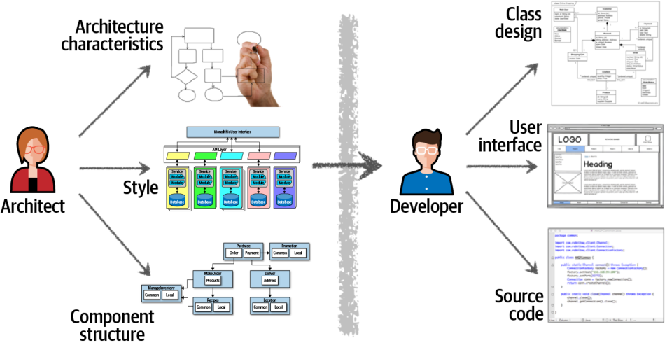
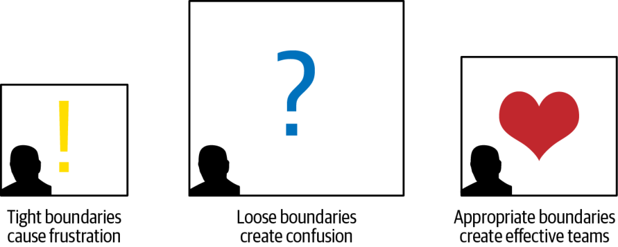
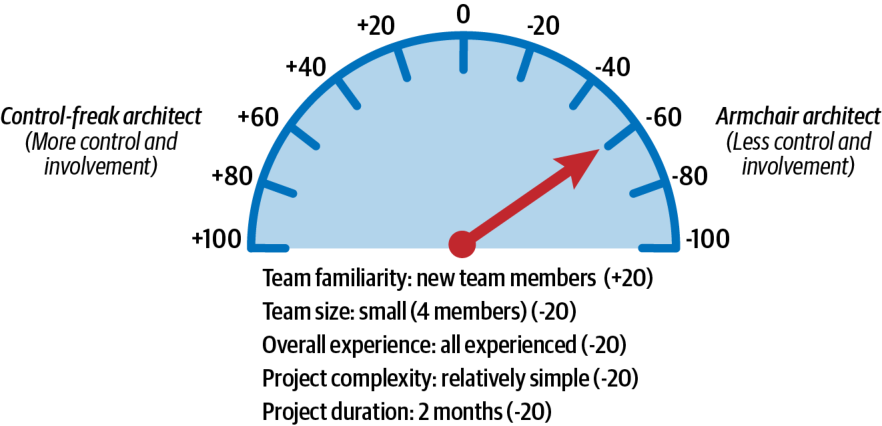
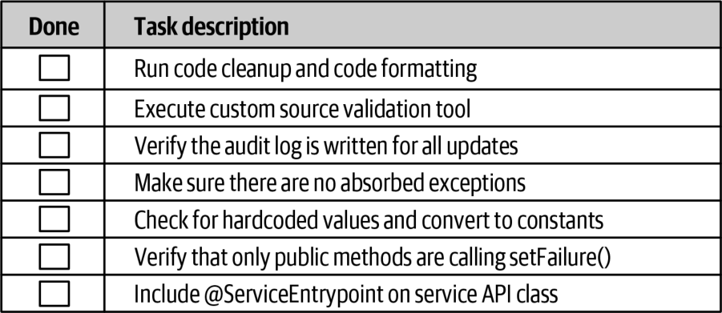

معماران نرمافزار افزون بر طراحی معماریهای فنی و گرفتنِ تصمیمات معماری، مسئول رهبری تیم توسعه و هدایت آن در پیادهسازی معماری نیز هستند. معمارانی که این کار را بهخوبی انجام میدهند، تیمهای توسعهٔ اثربخشی میسازند که برای حل مسائل و خلق راهحلهای موفق، از نزدیک با هم همکاری میکنند. هرچند این نکته ممکن است بدیهی به نظر برسد، معماران بسیاری را دیدهایم که تیمهای توسعهٔ خود را نادیده میگیرند و معماری را بهتنهایی و در محیطی جزیرهای (siloed) طراحی میکنند. وقتی چنین معماریای به تیم توسعه سپرده میشود، توسعهدهندگان اغلب برای پیادهسازیِ درست آن به زحمت میافتند.
بهرهور کردنِ تیمها یکی از راههایی است که معماران نرمافزارِ موفق با آن خود را متمایز میکنند. در این فصل، برخی فنون پایه برای بهبود اثربخشی تیمهای توسعه را معرفی میکنیم.
همکاری
صنعت نرمافزار بارها و بارها معماری و توسعه را فعالیتهایی کاملاً جدا از هم در نظر میگیرد. شکل ۲۴-۱ را در نظر بگیرید که مسئولیتهای سنتیِ معماران را با مسئولیتهای توسعهدهندگان مقایسه میکند. معماران مسئول فعالیتهایی مانند تحلیل نیازمندیهای کسبوکار برای استخراج و تعریف ویژگیهای معماری، انتخاب الگوها و سبکهای معماری برای حل مسئلهٔ حوزه، و ایجاد مؤلفههای منطقیاند. تیم توسعه از مصنوعاتی که معمار در جریان این فعالیتها میسازد استفاده میکند تا نمودارهای کلاس را برای مؤلفهها ایجاد کند، صفحههای واسط کاربری را بسازد و کد منبع را بنویسد و بیازماید.

شکل ۲۴-۱. نقشهای سنتیِ معماران در برابر توسعهدهندگان
تصویر شکل ۲۴-۱ نشان میدهد چرا این رویکرد سنتی به معماری بهندرت کارساز است. به پیکان یکسویهای نگاه کنید که از موانع مجازی و فیزیکیِ جداکنندهٔ معمار از توسعهدهنده میگذرد: همهٔ مشکلات از همینجا ناشی میشود. تصمیمهای معماران همیشه به تیم توسعه نمیرسد و وقتی تیمهای توسعه معماری را تغییر میدهند، این تغییر بهندرت به معمار بازمیگردد. در این مدل، چون معمار تا این حد از تیم توسعه جداست، معماری بهندرت به اهدافش دست مییابد.
کلید کارساز کردنِ معماری، برچیدنِ موانع فیزیکی و مجازی میان معماران و توسعهدهندگان و به جای آن، شکل دادنِ رابطهای مشارکتی، دوسویه و قوی میان آنهاست. معمار و تیم توسعه باید در یک تیم مجازیِ واحد باشند؛ مانند مدل مشارکتیای که در شکل ۲۴-۲ به تصویر کشیده شده است. این مدل نهتنها ارتباط و همکاریِ دوسویهٔ قوی را تسهیل میکند، بلکه به معمار امکان میدهد راهنما و مربی توسعهدهندگان باشد.
شکل ۲۴-۲. کارساز کردنِ معماری از راه همکاری
برخلاف رویکردهای آبشاریِ (waterfall) ایستا و انعطافناپذیرِ قدیمی، معماریهای نرمافزارِ امروزی تقریباً با هر تکرار یا مرحله از تلاش برای ساخت محصول تغییر میکنند و تکامل مییابند. همکاری نزدیک میان معمار و تیم توسعه برای موفقیت ضروری است.
در ادامهٔ این فصل و در فصل ۲۵، فنونی را برای شکل دادنِ روابط مشارکتیِ سالم و دوسویه نشان میدهیم؛ روابطی که نهتنها تیمهای توسعه را اثربخشتر میکنند، بلکه معماریهایی استوارتر و موفقتر پدید میآورند.
محدودیتها و مرزها
تجربهٔ ما نشان داده است که معمار نرمافزار میتواند بر موفقیت یا شکست یک تیم توسعه اثر چشمگیری بگذارد. تیمهایی که احساس میکنند از جریان امور کنار گذاشته شدهاند یا با معماران خود بیگانهاند، اغلب از محدودیتهای (constraints) گوناگونِ سیستم آگاهی ندارند؛ بدون سطح مناسبی از راهنمایی، برای پیادهسازیِ درست معماری به زحمت میافتند.
یکی از نقشهای معمار نرمافزار، ایجاد و انتقال محدودیتهایی است که توسعهدهندگان باید معماری را در چارچوب آنها پیادهسازی کنند. این محدودیتها را مانند «اتاقی» در نظر بگیرید که تیم توسعه برای پیادهسازی معماری در آن کار میکند. چنانکه شکل ۲۴-۳ نشان میدهد، مرزهایی (boundaries) که بیش از حد تنگ یا بیش از حد گشاد باشند، مستقیماً توانایی تیمها را برای پیادهسازیِ موفق معماری مختل میکنند.

شکل ۲۴-۳. مرزهایی که معمار نرمافزار ایجاد میکند بر توانایی تیم در پیادهسازی معماری اثر میگذارند
محدودیتهای بیش از حد، اتاق را برای تیم توسعه بیش از اندازه کوچک میکنند و مانع دسترسی آنها به بسیاری از ابزارها، کتابخانهها و شیوههایی میشوند که برای پیادهسازی سیستم به آنها نیاز دارند. این وضعیت ناکامی و دلسردی به بار میآورد و معمولاً به ترک پروژه از سوی توسعهدهندگان و رفتن به محیطهایی شادتر و سالمتر میانجامد.
عکس این وضعیت نیز ممکن است رخ دهد. محدودیتهایی که بیش از حد گشادند (یا نبودِ هرگونه محدودیت) اتاق را بیش از اندازه بزرگ میکنند. در این حالت گزینههای بسیار زیادی در دسترس است و تیم توسعه عملاً ناچار میشود نقش معمار را بر عهده بگیرد و همهٔ تصمیمات مهم معماری را خودش بگیرد. توسعهدهندگان در نبودِ راهنمایی مناسب، خود را درگیر اثباتهای مفهومِ (proofs of concept) بیش از حد مییابند، بر سر تصمیمهای طراحی کلنجار میروند و غیربهرهور، سردرگم و ناکام میشوند.
معماران نرمافزارِ اثربخش میکوشند سطح مناسبی از راهنمایی و محدودیتهای بجا را فراهم کنند تا تیم هر آنچه نیاز دارد در اختیار داشته باشد. بقیهٔ این فصل به نشان دادنِ چگونگیِ ایجاد این مرزهای بجا اختصاص دارد.
شخصیتهای معمار
در اینجا برای روشنیِ مفهومی، تعمیمی گسترده میدهیم و میگوییم شخصیت معماران سه گونهٔ اصلی دارد: معمار کنترلگرِ افراطی (control-freak architect)، معمار پشتمیزنشین (armchair architect) و معمار اثربخش (effective architect). معماران کنترلگرِ افراطی معمولاً مرزهای تنگ پدید میآورند، معماران پشتمیزنشین مرزهای گشاد و معماران اثربخش مرزهای بجا. بخشهای بعدی جزئیات هر یک از این شخصیتهای معماری را توصیف میکنند.
معمار کنترلگرِ افراطی
معمار کنترلگرِ افراطی میکوشد تکتک جزئیات فرایند توسعهٔ نرمافزار را کنترل کند. هر تصمیمی که میگیرد معمولاً بیش از حد ریزدانه و سطح پایین است و به مرزهای تنگ و محدودیتهای بیش از حد برای تیم توسعه میانجامد.
برای مثال، معمار کنترلگرِ افراطی ممکن است تیم توسعه را از دانلود کتابخانههای آزاد یا شخص ثالثِ سودمند یا حتی ضروری منع کند، یا محدودیتهای سختگیرانهای بر قراردادهای نامگذاری (naming conventions)، طراحی کلاسها، طول متدها و جز آن اعمال کند. او حتی ممکن است تا آنجا پیش برود که برای تیمهای توسعه شبهکد بنویسد تا آن را پیادهسازی کنند و عملاً هنر برنامهنویسی را از توسعهدهندگان بدزدد. توسعهدهندگان این وضعیت را ناامیدکننده مییابند و اغلب احترامشان را نسبت به معمار از دست میدهند.
متأسفانه، تبدیل شدن به یک معمار کنترلگرِ افراطی بسیار آسان است؛ بهویژه هنگامی که از نقش توسعهدهندهٔ نرمافزار به معماری کوچ میکنید. نقش معماران، ایجاد بلوکهای سازندهٔ برنامهٔ کاربردی (مؤلفههای منطقی) و تعیین چگونگیِ تعامل همهٔ آنها با یکدیگر است. نقش متناظر توسعهدهندگان این است که با استفاده از نمودارهای کلاس و الگوهای طراحی تعیین کنند آن مؤلفههای منطقی چگونه به بهترین شکل پیادهسازی شوند. معماران تازهکار، که در نقش توسعهدهنده به ایجاد نمودارهای کلاس و انتخاب الگوهای طراحی عادت کردهاند، اغلب مقاومت در برابر این وسوسه را دشوار مییابند.
برای مثال، فرض کنید معماری یک مؤلفهٔ منطقی ایجاد میکند که دادههای مرجعِ سیستم را مدیریت میکند: چیزهایی مانند دادههای ایستای جفت نام-مقدار که در وبسایت استفاده میشوند، کدهای محصول و کدهای انبار. نقش معمار این است که مؤلفهٔ منطقی (در این مورد، یک Reference Manager) را شناسایی کند، مجموعهٔ عملیات اصلی آن را تعیین کند (برای مثال، GetData، SetData، ReloadCache و NotifyOnUpdate) و مشخص کند کدام مؤلفههای دیگر باید با ReferenceManager تعامل داشته باشند. معمار کنترلگرِ افراطی ممکن است فکر کند بهترین راه پیادهسازی این مؤلفه، استفاده از الگوی بارگذار موازی (parallel loader pattern) با بهرهگیری از یک کش داخلی با ساختار دادهٔ مشخصی است. این طراحی ممکن است اثربخش باشد، اما تنها طراحی ممکن نیست و مهمتر از آن، ارائهٔ طراحی داخلیِ Reference Manager وظیفهٔ معمار نیست؛ این وظیفهٔ توسعهدهنده است.
چنانکه در این فصل خواهیم گفت، گاهی معماران بسته به پیچیدگی پروژه و سطح مهارت تیم باید نقش کنترلگرِ افراطی را ایفا کنند. اما بیشتر اوقات، معمار کنترلگرِ افراطی تیم توسعه را مختل میکند، سطح مناسبی از راهنمایی ارائه نمیدهد، سد راه میشود و بهطور کلی در نقش رهبر ناکارآمد است.
معمار پشتمیزنشین
معمار پشتمیزنشین معماری است که مدت بسیار درازی است کد ننوشته (اگر اصلاً نوشته باشد) و هنگام طراحی معماری جزئیات پیادهسازی را در نظر نمیگیرد. چنین معمارانی معمولاً از تیم توسعه جدا هستند و بهندرت در دسترساند؛ پس از تکمیل نمودارهای اولیهٔ معماری، بهسادگی سراغ پروژهٔ بعدی میروند.
برخی معماران پشتمیزنشین بهسادگی از عهدهٔ کار برنمیآیند: فناوری یا حوزهٔ کسبوکار را آنقدر خوب نمیشناسند که بتوانند رهبری یا راهنمایی ارائه کنند. به این بیندیشید: توسعهدهندگان چه میکنند؟ البته کد منبع مینویسند. وانمود کردن به نوشتن کد منبع واقعاً دشوار است؛ یا میتوانید کد منبع بنویسید یا نمیتوانید. معمار چه میکند؟ هیچکس نمیداند! کلی خط و جعبه میکشد؟ وانمود کردن به معمار بودن بسیار آسان است.
برای مثال، فرض کنید یک معمار پشتمیزنشین که سیستم معاملات سهام را طراحی میکند از عهدهٔ کار برنمیآید. نمودار معماری او ممکن است تنها دو جعبه داشته باشد: یکی نمایانگر سیستم معاملات و دیگری نمایانگر موتور انطباق معاملات (trade compliance engine) که سیستم با آن ارتباط دارد. این معماری هیچ ایراد نادرستی ندارد؛ فقط بیش از حد سطح بالاست و به کار هیچکس نمیآید.
معماران پشتمیزنشین مرزهای گشادی پیرامون تیمهای توسعهٔ خود پدید میآورند و در نتیجه، آن تیمها سرانجام کاری را انجام میدهند که قرار است معمار انجام دهد. سرعت (velocity) و بهرهوری آنها در نتیجه آسیب میبیند و همه دربارهٔ اینکه سیستم چگونه باید کار کند سردرگم میشوند.
تبدیل شدن به معمار پشتمیزنشین به همان اندازهٔ تبدیل شدن به کنترلگرِ افراطی آسان است. وقتی معماری درمییابد که برای تیمهای توسعهای که معماری را پیادهسازی میکنند وقت ندارد (یا بهسادگی تصمیم میگیرد وقتی با آنها نگذراند)، این نشانهای است که ممکن است در حال افتادن به شخصیت معمار پشتمیزنشین باشد. تیمهای توسعه به پشتیبانی و راهنمایی معمار نیاز دارند و لازم است معمار برای پاسخ دادن به پرسشها در دسترس باشد. نشانههای دیگر معمار پشتمیزنشین عبارتاند از:
درک نکردنِ کامل حوزهٔ کسبوکار، مسئلهٔ کسبوکار یا فناوری مورد استفاده
نداشتنِ تجربهٔ عملیِ کافی در توسعهٔ نرمافزار
در نظر نگرفتنِ پیامدهای مرتبط با یک پیادهسازی مشخص از راهحل معماری (مانند پیچیدگی، نگهداری و آزمون)
معماران اندکی قصد دارند معمار پشتمیزنشین شوند؛ این وضعیت وقتی «پیش میآید» که میان پروژهها یا تیمها بیش از حد پراکنده میشوند و ارتباطشان با فناوری یا حوزهٔ کسبوکار قطع میشود. برای پرهیز از این وضعیت، توصیه میکنیم بیشتر درگیر فناوریهای پروژه شوید و درک عمیقتری از مسئله و حوزهٔ کسبوکار به دست آورید.
معمار اثربخش
معمار نرمافزارِ اثربخش محدودیتها و مرزهای بجا پدید میآورد، اطمینان حاصل میکند که اعضای تیم بهخوبی با هم کار میکنند و سطح مناسبی از راهنمایی را در اختیارشان میگذارد. معمار اثربخش همچنین مطمئن میشود که ابزارها و فناوریهای درست در اختیار تیم است و هر مانع دیگری را از سر راه تیم توسعه و اهدافش برمیدارد.
هرچند این کار بدیهی و آسان به نظر میرسد، چنین نیست. تبدیل شدن به یک رهبر اثربخش، و نیز یک معمار نرمافزار اثربخش، هنری است که به همکاری نزدیک با تیم توسعه و جلب احترام آن نیاز دارد. در بخشهای بعدی، فنونی را برای تعیین میزان مشارکت معمار با یک تیم توسعه نشان میدهیم.
چه میزان مشارکت؟
اثربخش بودن بهعنوان معمار یعنی بدانید چه اندازه با یک تیم توسعهٔ مشخص درگیر شوید و چه زمانی از سر راهش کنار بروید. این مفهوم که رهبری کشسان (Elastic Leadership) نامیده میشود، بهطور گسترده از سوی نویسنده و مشاور Roy Osherove ترویج شده است. ما در اینجا کمی از کار Osherove فاصله میگیریم تا بر عواملی تمرکز کنیم که بهطور خاص به رهبری در معماری نرمافزار مربوطاند.
دانستنِ اینکه چه اندازه باید با یک تیم توسعه درگیر شوید میتواند چالشبرانگیز باشد؛ تعیین اینکه همزمان چند تیم یا پروژه را میتوانید مدیریت کنید نیز همینطور. پنج عامل کلیدی که باید در نظر بگیرید عبارتاند از:
آشنایی اعضای تیم با یکدیگر (Team familiarity): اعضای تیم چقدر یکدیگر را میشناسند؟ آیا پیشتر با هم کار کردهاند؟ بهطور کلی، هرچه اعضای تیم یکدیگر را بهتر بشناسند، بیشتر میتوانند خودسازمانده باشند و کمتر به مشارکت معمار نیاز دارند. در مقابل، هرچه اعضای تیم تازهواردتر باشند، بیشتر به معمار نیاز دارند تا همکاری را تسهیل کند و دستهبندیهای درون تیم را کاهش دهد.
اندازهٔ تیم (Team size): تیمی با بیش از ۱۲ توسعهدهنده را تیم بزرگ و تیمی با ۵ توسعهدهنده یا کمتر را تیم کوچک در نظر میگیریم. هرچه تیم بزرگتر باشد، نیاز به معمار بیشتر است. این موضوع را در بخش «نشانههای هشدار در تیم» در صفحهٔ ۴۴۳ با جزئیات بیشتری بررسی میکنیم.
تجربهٔ کلی (Overall experience): ترکیب توسعهدهندگان ارشد و تازهکارِ (کمتجربهٔ) تیم چگونه است؟ اعضای تیم فناوری و حوزهٔ کسبوکار را چقدر خوب میشناسند؟ (اگر حوزهٔ کسبوکار بهویژه پیچیده است، سطح کلی تجربهٔ فناورانهٔ اعضای تیم را جدا از تجربهشان در حوزهٔ کسبوکار ارزیابی کنید.) تیمهایی که توسعهدهندگان تازهکارِ فراوانی دارند به مشارکت و راهنمایی بیشتری از سوی معمار نیاز دارند. در تیمهایی که توسعهدهندگان ارشد بیشتری دارند، معمار میتواند بیشتر نقش تسهیلگر را ایفا کند تا راهنما.
پیچیدگی پروژه (Project complexity): پروژههای بسیار پیچیده نیاز دارند که معمار برای کمک به حل مسائل بیشتر در دسترس باشد، در حالی که پروژههای نسبتاً ساده و سرراست به مشارکت کمتری نیاز دارند.
مدت پروژه (Project duration): آیا پروژه کوتاه (مثلاً دو ماه)، بلند (دو سال) یا با مدت متوسط (حدود شش ماه) است؟ مشارکت لازمِ معمار با طول پروژه افزایش مییابد.
هرچند بیشتر این عوامل ممکن است بدیهی به نظر برسند، مدت پروژه گاهی گیجکننده است. چنانکه اشاره کردیم، هرچه مدت پروژه کوتاهتر باشد، مشارکت کمتری لازم است و هرچه پروژه بلندتر باشد، مشارکت بیشتری لازم است. آیا این خلاف شهود به نظر میرسد؟ یک پروژهٔ سریعِ دوماهه را در نظر بگیرید. دو ماه زمان زیادی برای سنجش نیازمندیها، آزمایش، توسعهٔ کد، آزمودن همهٔ سناریوها و انتشار در محیط تولید نیست. در این حالت معمار باید بیشتر مانند یک معمار پشتمیزنشین رفتار کند؛ تیم توسعه از پیش احساس فوریت شدیدی دارد و یک معمار کنترلگرِ افراطی فقط سد راه میشود و پروژه را به تأخیر میاندازد. حالا به یک پروژهٔ دوساله فکر کنید: توسعهدهندگان آسودهخاطرترند و احساس فوریت نمیکنند. احتمالاً برای تعطیلات برنامهریزی میکنند و ناهارهای طولانی میخورند. بنابراین، در پروژههای طولانیتر به معمار نیاز است تا اطمینان حاصل کند که پروژه طبق زمانبندی پیش میرود و تیم پیچیدهترین کارها را زودتر انجام میدهد.
برای نشان دادنِ چگونگیِ استفاده از این عوامل در تعیین سطح مناسب مشارکت، مقیاس ثابتی با ۲۰ امتیاز برای هر عامل در نظر بگیرید؛ چنانکه در شکل ۲۴-۴ نشان داده شده است. سمتِ دارای مقادیر منفیِ مقیاس نشاندهندهٔ مشارکت کمتر است و به حد افراطیِ معمار پشتمیزنشین میرسد. مقادیر مثبت نشاندهندهٔ مشارکت بیشترند و به حد افراطیِ معمار کنترلگرِ افراطی میرسند.
شکل ۲۴-۴. مقیاس سنجش میزان مشارکت معماران با تیمهای توسعه
این مقیاس البته دقیق نیست، اما به تعیین میزان مشارکتی که معمار باید با یک تیم توسعه انتظار داشته باشد کمک میکند. برای مثال، سناریوی پروژهٔ «سناریوی ۱» را در نظر بگیرید که در جدول ۲۴-۱ و شکل ۲۴-۵ نشان داده شده است. مقدار هر عامل در جدول «عقربه» را به سوی یکی از دو حد افراطی میبرد: +۲۰ برای عاملی که نشاندهندهٔ مشارکت بیشتر است و -۲۰ برای عاملی که نشاندهندهٔ مشارکت کمتر است. مجموع امتیاز عوامل در سناریوی ۱ برابر -۶۰ است؛ یعنی معمار باید مشارکت خود را در تعاملات روزانه محدود کند، تسهیلگری کند اما از سر راه تیم کنار بماند. حضور او برای پاسخ دادن به پرسشها و اطمینان از اینکه تیم در مسیر درست است لازم خواهد بود، اما در بیشتر موارد معمار باید تا حد زیادی دخالت نکند و بگذارد تیمِ باتجربه کاری را انجام دهد که در آن از همه بهتر است: توسعهٔ سریع نرمافزار.
جدول ۲۴-۱. نمونهٔ سناریوی ۱ برای میزان مشارکت
عامل
مقدار
رتبه
شخصیت
آشنایی اعضای تیم با یکدیگر
اعضای تازهوارد
+۲۰
کنترلگرِ افراطی
اندازهٔ تیم
کوچک (۴ عضو)
-۲۰
معمار پشتمیزنشین
تجربهٔ کلی
همه باتجربه
-۲۰
معمار پشتمیزنشین
پیچیدگی پروژه
نسبتاً ساده
-۲۰
معمار پشتمیزنشین
مدت پروژه
۲ ماه
-۲۰
معمار پشتمیزنشین
امتیاز انباشته
-۶۰
معمار پشتمیزنشین

شکل ۲۴-۵. میزان مشارکت برای سناریوی ۱
اکنون سناریوی ۲ را در نظر بگیرید که در جدول ۲۴-۲ توصیف و در شکل ۲۴-۶ به تصویر کشیده شده است؛ در این سناریو اعضای تیم یکدیگر را بهخوبی میشناسند، اما تیم بزرگ است (۱۲ عضو) و بیشتر از توسعهدهندگان تازهکار تشکیل شده است. پروژه نسبتاً پیچیده است و شش ماه طول میکشد. در این حالت، امتیاز انباشته +۲۰ میشود؛ یعنی معمار اثربخش باید نقش راهنما و مربی را بر عهده بگیرد و تا حد زیادی در فعالیتهای روزمره مشارکت داشته باشد، اما نه آنقدر که تیم را مختل کند.
جدول ۲۴-۲. نمونهٔ سناریوی ۲ برای میزان مشارکت
عامل
مقدار
رتبه
شخصیت
آشنایی اعضای تیم با یکدیگر
یکدیگر را بهخوبی میشناسند
-۲۰
معمار پشتمیزنشین
اندازهٔ تیم
بزرگ (۱۲ عضو)
+۲۰
کنترلگرِ افراطی
تجربهٔ کلی
بیشتر تازهکار
+۲۰
کنترلگرِ افراطی
پیچیدگی پروژه
پیچیدگی بالا
+۲۰
کنترلگرِ افراطی
مدت پروژه
۶ ماه
-۲۰
معمار پشتمیزنشین
امتیاز انباشته
+۲۰
کنترلگرِ افراطی
شکل ۲۴-۶. میزان مشارکت برای سناریوی ۲
معماران در آغاز پروژه از این عوامل برای تعیین میزان مشارکتی که برنامهریزی میکنند استفاده میکنند، اما با پیشرفت پروژه، سطح مشارکتشان معمولاً تغییر میکند. از این رو توصیه میکنیم این عوامل را بهطور پیوسته در سراسر چرخهٔ عمر پروژه تحلیل کنید.
عینی کردنِ این عوامل دشوار است، زیرا برخی از آنها (مانند سطح تجربهٔ کلی تیم) ممکن است اهمیت بیشتری از بقیه داشته باشند. در چنین مواردی میتوان معیارها را بهآسانی وزندهی یا اصلاح کرد تا با وضعیت مشخصی سازگار شوند.
پیام اصلی در اینجا این است که میزان مناسب مشارکت معمار در یک تیم توسعه بر پایهٔ این پنج عامل تغییر میکند. معماران با استفاده از این عوامل برای سنجش سطح مشارکت خود میتوانند مرزهای بجا را ترسیم کنند و «اتاقی» به اندازهٔ مناسب برای تیم پدید آورند.
نشانههای هشدار در تیم
اندازهٔ تیم را یکی از پنج عاملی برشمردیم که به معمار کمک میکنند سطح مشارکت خود در یک تیم توسعه را تعیین کند: هرچه تیم بزرگتر باشد، مشارکت بیشتری از معمار لازم است و هرچه تیم کوچکتر باشد، مشارکت کمتری. اما «تیم بزرگ» دقیقاً به چه معناست؟ در این بخش سه عامل را بررسی میکنیم که به معمار کمک میکنند تشخیص دهد آیا تیم بیش از حد بزرگ است و در نتیجه به اندازهٔ توانش اثربخش نیست یا نه.
اتلاف فرایند
اصطلاح اتلاف فرایند (process loss) را Fred Brooks در کتاب خود The Mythical Man-Month (Addison-Wesley، ۱۹۹۵) وضع کرد. ایدهٔ اصلی اتلاف فرایند که با نام قانون Brooks (Brooks’s Law) نیز شناخته میشود این است که هرچه افراد بیشتری به پروژه اضافه کنید، پروژه زمان بیشتری میبرد. چنانکه شکل ۲۴-۷ نشان میدهد، توان بالقوهٔ گروه (group potential) با مجموع تلاشهای همهٔ اعضای تیم تعریف میشود. با این حال، Brooks میگوید بهرهوری واقعی هر تیم همواره کمتر از بهرهوری بالقوهٔ آن است؛ این تفاوت را اتلاف فرایندِ تیم مینامند.
شکل ۲۴-۷. بر پایهٔ قانون Brooks، اندازهٔ تیم بر بهرهوری واقعی آن اثر میگذارد
اتلاف فرایند عامل خوبی برای تعیین اندازهٔ درست تیم در یک پروژهٔ مشخص است و معمار نرمافزارِ اثربخش تیم توسعه را زیر نظر دارد تا نشانههای اتلاف فرایند را بیابد. برای نمونه، اگر اعضای تیم هنگام ارسال کد به مخزن (repository) مدام به تعارض ادغام (merge conflict) برمیخورند، این نشانهای است که روی کد یکسانی کار میکنند و احتمالاً سد راه یکدیگر میشوند.
برای پرهیز از اتلاف فرایند، توصیه میکنیم به دنبال حوزههایی برای موازیسازی (parallelism) باشید و اعضای تیم را روی سرویسها یا بخشهای جداگانهای از برنامه به کار بگیرید. هر بار که مدیر پروژه (project manager) پیشنهاد میکند عضو تازهای به پروژه اضافه شود، معمار اثربخش به دنبال فرصتهایی برای ایجاد جریانهای کاری موازی (parallel work streams) میگردد. اگر چنین فرصتی نیابد، به مدیر پروژه اطلاع میدهد که افزودن عضو تازه ممکن است اثر منفی بر تیم داشته باشد.
نادانی جمعی
نادانی جمعی (pluralistic ignorance) وضعیتی است که در آن همه در دل یک هنجار را رد میکنند، اما با آن موافقت میکنند، چون گمان میکنند چیز بدیهیای را درنمییابند. برای مثال، فرض کنید بیشتر افراد یک تیم بزرگ توافق دارند که استفاده از پیامرسانی (messaging) میان دو سرویس راه دور بهترین راهحل است. یک نفر این ایده را احمقانه میداند، زیرا میان این دو سرویس یک دیوار آتش امن وجود دارد. با این حال، آن فرد در ظاهر همراه با دیگران با استفاده از پیامرسانی موافقت میکند. هرچند در دل این ایده را رد میکند، میترسد اگر لب به سخن بگشاید معلوم شود چیز بدیهیای را درنیافته است. هرچه گروه بزرگتر باشد، افراد کمتر حاضرند با دیگران مخالفت کنند. در یک تیم کوچکتر، شاید آن فرد زبان به اعتراض میگشود و راهحل اولیه را به چالش میکشید و تیم را به سوی پروتکل دیگری (مانند REST) برای راهحلی بهتر سوق میداد.
مفهوم نادانی جمعی با داستان کودکانهٔ دانمارکی «لباس تازهٔ امپراتور» (The Emperor’s New Clothes) نوشتهٔ Hans Christian Andersen شهرت یافت. در این داستان، دو شیاد که خود را خیاط جا زدهاند، پادشاه را متقاعد میکنند که لباس تازهای که برایش «دوختهاند» برای هر کسی که شایستگی دیدنش را ندارد نامرئی است. پادشاه که لباس را نمیبیند اما حاضر نیست بپذیرد که خودش ناشایست است، کاملاً برهنه با غرور قدم میزند و از همهٔ رعایایش میپرسد لباس تازهاش را چگونه مییابند. رعایا که میترسند ناشایست شمرده شوند، به پادشاه اطمینان میدهند که لباس تازهاش بهترین لباس دنیاست. این حماقت ادامه مییابد تا اینکه سرانجام کودکی فریاد میزند که پادشاه اصلاً لباسی به تن ندارد.
معمار نرمافزارِ اثربخش در جلسات، حالت چهره و زبان بدن افراد را زیر نظر دارد و هوشیار است که شاید برخی به سبب نادانی جمعی تردید خود را پنهان کنند. اگر معمار حس کند چنین اتفاقی در حال رخ دادن است، نقش تسهیلگر را بر عهده میگیرد؛ مثلاً با قطع کردن بحث، از فرد مردد میپرسد دربارهٔ راهحل پیشنهادی چه فکر میکند و وقتی او لب به سخن میگشاید از او پشتیبانی میکند، حتی اگر آن فرد اشتباه کند. نکته این است که معمار در نقش تسهیلگر اطمینان حاصل کند که همه محیط را برای ابراز نظر به اندازهٔ کافی امن میدانند.
سومین عاملی که اندازهٔ مناسب تیم را نشان میدهد پخش مسئولیت (diffusion of responsibility) نام دارد. با بزرگتر شدن تیمها، رشد آنها اثر منفی بر ارتباطات میگذارد. اگر اعضای تیم سردرگماند که چه کسی مسئول چه کاری است و کارها از قلم میافتند، اینها نشانههای خوبی از بیش از حد بزرگ بودن تیم است.
شکل ۲۴-۸ کسی را نشان میدهد که کنار خودرویی از کار افتاده در حاشیهٔ یک جادهٔ روستایی ایستاده است. در این سناریو، چند نفر ممکن است توقف کنند و از راننده بپرسند آیا همهچیز رو به راه است؟ چون جاده کوچک است، احتمالاً در یک اجتماع کوچک قرار دارد، پس شاید هر کسی که از آنجا میگذرد توقف کند. اما اگر همان راننده در حاشیهٔ یک بزرگراه شلوغ در یک شهر بزرگ درمانده شده باشد چه؟ هزاران خودرو ممکن است بهسادگی بگذرند، بیآنکه کسی بایستد و بپرسد آیا همهچیز رو به راه است. این نمونهٔ خوبی از پخش مسئولیت است. با شلوغتر و پرجمعیتتر شدن شهرها، مردم فرض میکنند راننده پیشتر کمک خواسته است یا عضو دیگری از جمعیتی که شاهد ماجراست کمک خواهد کرد. با این حال، در بیشتر این موارد کمکی در راه نیست و راننده با تلفن همراهی که شارژش تمام شده یا جا مانده است گیر افتاده است.
شکل ۲۴-۸. پخش مسئولیت
معمار اثربخش نهتنها تیم توسعه را در پیادهسازی معماری راهنمایی میکند، بلکه اطمینان حاصل میکند که اعضای آن سالم و شادند و برای رسیدن به هدفی مشترک با هم کار میکنند. جستوجوی این سه نشانهٔ هشدار و کمک به رفع مشکلاتی که نشان میدهند، راه خوبی برای تضمین یک تیم توسعهٔ اثربخش است.
بهرهگیری از فهرستهای وارسی
خلبانان هواپیماهای مسافربری در هر پرواز از فهرستهای وارسی استفاده میکنند. حتی باتجربهترین و کارکشتهترین خلبانان نیز برای برخاستن، فرود و هزاران وضعیت دیگر، چه وضعیتهای رایج و چه حالتهای مرزیِ غیرعادی، فهرست وارسی دارند. آنها از فهرستهای وارسی استفاده میکنند، زیرا جا انداختن یک تنظیم یا رویهٔ هواپیما (مانند فراموش کردن تنظیم فلپها روی ۱۰ درجه پیش از برخاستن) میتواند مرز میان یک پرواز ایمن و یک فاجعه باشد.
دکتر Atul Gawande در کتاب عالی خود The Checklist Manifesto (Picador، ۲۰۱۱) قدرت فهرستهای وارسی را در ایمنتر کردن اعمال جراحی شرح میدهد. دکتر Gawande که از نرخ بالای عفونتهای استافیلوکوکی در بیمارستانها نگران شده بود، فهرستهای وارسیِ جراحی را پدید آورد. نرخ عفونت در بیمارستانهایی که از این فهرستها استفاده کردند تا نزدیک صفر کاهش یافت، در حالی که نرخ عفونت در بیمارستانهای گروه کنترل که از فهرستها استفاده نمیکردند همچنان رو به افزایش بود.
فهرستهای وارسی کار میکنند. ابزارهای بسیار خوبی برای اطمینان از ایناند که هر کاری پوشش داده و انجام شود. پس چرا صنعت توسعهٔ نرمافزار نیز از آنها بهره نمیگیرد؟ ما که سالهای بسیاری در این صنعت کار کردهایم، قاطعانه باور داریم که فهرستهای وارسی تفاوت بزرگی در اثربخشی تیمهای توسعه پدید میآورند. البته بیشتر توسعهدهندگان نرمافزار با مسائل مرگ و زندگی، مانند به پرواز درآوردن هواپیمای مسافربری یا انجام جراحی قلب باز، سروکار ندارند. به بیان دیگر، توسعهدهندگان نرمافزار برای همهچیز به فهرست وارسی نیاز ندارند. کلید کار این است که بدانید کی از آنها بهره بگیرید و کی نه.
شکل ۲۴-۹ فهرست وارسی نیست؛ مجموعهای از گامهای رویهای برای ایجاد یک جدول تازه در پایگاهداده است و از این رو نباید به شکل فهرست وارسی باشد. برخی از کارهای آن وابستگی دارند؛ برای مثال، تا وقتی فرم ارسال نشده است نمیتوان جدول پایگاهداده را راستیآزمایی کرد. هر فرایندی که جریانی رویهای از کارهای وابسته دارد نباید در فهرست وارسی بیاید. فرایندهای ساده و آشنایی که بارها و بدون خطا اجرا میشوند نیز نباید در فهرست وارسی بیایند.
شکل ۲۴-۹. نمونهای از یک فهرست وارسیِ بد
نامزدهای خوب برای فهرست وارسی فرایندهاییاند که ترتیب رویهای ثابت یا کارهای وابسته ندارند، و نیز فرایندهایی که افراد در آنها مدام گامهایی را جا میاندازند یا خطا میکنند. زیادهروی نکنید و همهچیز را به فهرست وارسی تبدیل نکنید. معماران اغلب وقتی درمییابند که فهرستهای وارسی واقعاً تیمهای توسعه را اثربخشتر میکنند، دچار همین زیادهروی میشوند. آنها با این کار در خطر گرفتار شدن به چیزی هستند که قانون بازده نزولی (Law of Diminishing Returns) نام دارد: هرچه معمار فهرستهای وارسی بیشتری بسازد، احتمال استفادهٔ توسعهدهندگان از آنها کمتر میشود. همچنین عاقلانه است فهرستهای وارسی را تا حد امکان کوتاه کنید، در حالی که همچنان همهٔ گامهای لازم را در بر بگیرند. توسعهدهندگان معمولاً از فهرستهای وارسیِ بیش از حد طولانی پیروی نمیکنند. اگر هر یک از کارهای فهرستشده خودکارسازیپذیر است، آن را خودکار کنید و از فهرست وارسی حذف کنید.
سه فهرست وارسی که به تجربهٔ ما بیشترین سودمندی را داشتهاند به تکمیل کد توسعهدهنده، آزمون واحد و آزمون کارکردی، و انتشار نرمافزار میپردازند. هر یک از این فهرستها در بخشهای بعدی بررسی میشود.
اثر Hawthorne (The Hawthorne Effect)
دشوارترین بخش معرفی فهرستهای وارسی به یک تیم توسعه این است که توسعهدهندگان را به استفادهٔ واقعی از آنها وادارید. بسیار پیش میآید که برخی توسعهدهندگان با کمبود وقت روبهرو شوند و بیآنکه کارها را واقعاً انجام دهند، بهسادگی همهٔ موارد فهرست وارسی را تیک بزنند.
یکی از راههای رسیدگی به این مشکل این است که با تیم دربارهٔ تفاوتی که استفاده از فهرستهای وارسی پدید میآورد گفتوگو کنید و از اعضا بخواهید کتاب The Checklist Manifesto نوشتهٔ Atul Gawande را بخوانند. مطمئن شوید که هر یک از اعضای تیم منطق پشت هر فهرست وارسی را درک میکند. میتوانید از آنها بخواهید بهطور جمعی تصمیم بگیرند کدام رویهها باید در فهرست وارسی بیایند و کدام نه؛ ایجاد حس مالکیت نیز کمک میکند.
وقتی همهٔ راهها شکست بخورد، اثر Hawthorne (Hawthorne effect) به کار میآید: گرایش افرادی که میدانند زیر نظر یا پایشاند به تغییر رفتارشان، و معمولاً به انجام دادنِ کار درست. این اثر بیش از آنکه به پایش واقعی نیاز داشته باشد، به برداشتِ افراد از پایش نیاز دارد؛ برای نمونه، بسیاری از کارفرمایان دوربینهای از کار افتاده را در جاهای کاملاً در معرض دید نصب میکنند و برخی دیگر نرمافزار پایش وبسایت نصب میکنند که بهندرت بررسیاش میکنند. (مدیران واقعاً چند تا از آن گزارشها را میبینند؟)
برای استفاده از اثر Hawthorne در حاکمیت بر فهرستهای وارسی، به تیم اعلام کنید که چون استفاده از فهرستهای وارسی برای بهرهوری تیم حیاتی است، همهٔ فهرستهای وارسی راستیآزمایی خواهند شد تا اطمینان حاصل شود که کارها واقعاً انجام شدهاند. در واقعیت، بازبینیهای سرزدهٔ گاهبهگاه کافی است؛ احتمال اینکه توسعهدهندگان مواردی را جا بیندازند یا بهدروغ آنها را تکمیلشده علامت بزنند بسیار کمتر خواهد شد.
فهرست وارسیِ تکمیل کد توسعهدهنده
فهرست وارسیِ تکمیل کد توسعهدهنده (developer code-completion checklist) ابزار سودمندی است، بهویژه وقتی توسعهدهنده اعلام میکند کارش با کد «تمام شده» است. این فهرست برای رسیدن به یک تعریف انجامشدگی (definition of done) نیز سودمند است: اگر همهٔ موارد فهرست وارسی تکمیل شده باشد، توسعهدهنده میتواند بگوید کارش با کدی که روی آن کار میکرد واقعاً تمام شده است.
برخی از مواردی که باید در فهرست وارسیِ تکمیل کد توسعهدهنده گنجانده شوند عبارتاند از:
استانداردهای کدنویسی و قالببندی که ابزارهای خودکار پوشش نمیدهند
مواردی که اغلب نادیده گرفته میشوند (مانند استثناهای بلعیدهشده (absorbed exceptions))
استانداردهای ویژهٔ پروژه
دستورالعملها یا رویههای ویژهٔ تیم
شکل ۲۴-۱۰ نمونهای از فهرست وارسیِ تکمیل کد توسعهدهنده را نشان میدهد. چند کار بدیهی در اینجا دیده میشود، مانند «پاکسازی و قالببندی کد را اجرا کنید» و «مطمئن شوید هیچ استثنای بلعیدهشدهای وجود ندارد». توسعهدهندگانِ شتابزده چند وقت یک بار فراموش میکنند پاکسازی و قالببندی کد را از محیط توسعهٔ یکپارچه (IDE) اجرا کنند؟ بسیار زیاد. Gawande در کتاب The Checklist Manifesto همین پدیده را دربارهٔ اعمال جراحی مییابد: اغلب همان کارهای بدیهیاند که از قلم میافتند.

شکل ۲۴-۱۰. نمونهای از فهرست وارسیِ تکمیل کد توسعهدهنده
معمار باید همیشه فهرست وارسی را بازبینی کند تا ببیند آیا مواردی از آن را میتوان خودکار کرد یا بهصورت افزونههایی برای یک بررسیکنندهٔ اعتبار کد (code-validation checker) نوشت. هرچند داشتنِ کارهای ویژهٔ پروژه در فهرست وارسی (مانند اجرای اعتبارسنج سفارشی، راستیآزمایی نوشته شدنِ گزارش ممیزی، فراخوانی متد setFailure() و گنجاندن حاشیهنویسی @ServiceEntrypoint) خوب است، برخی از این کارها را میتوان خودکار کرد. برای مثال، هرچند بررسی خودکار برای «@ServiceEntrypoint را روی کلاس API سرویس بگنجانید» شاید عملی نباشد، برای «راستیآزمایی کنید که تنها متدهای عمومی setFailure() را فراخوانی میکنند» عملی است؛ بررسیای سرراست که با هر ابزار پیمایش کد (code-crawling tool) میتوان خودکارش کرد. جستوجوی حوزههای خودکارسازی، فهرست وارسی را کوتاهتر و نسبت سیگنال به نویز آن را بهتر میکند.
فهرست وارسیِ آزمون واحد و آزمون کارکردی
شاید یکی از بهترین فهرستهای وارسی، فهرست وارسیِ آزمون واحد (unit testing) و آزمون کارکردی (functional testing) باشد. این فهرست وارسی برخی از موارد نامعمولتر و حالتهای مرزی را در بر دارد که توسعهدهندگان نرمافزار معمولاً آزمودنشان را فراموش میکنند. هر گاه کسی از تیم تضمین کیفیت (QA) بر پایهٔ یک مورد آزمون (test case) خاص به مشکلی در کد برخورد، آن مورد آزمون را به این فهرست وارسی بیفزایید.
این فهرست وارسیِ خاص معمولاً یکی از طولانیترین فهرستهاست، زیرا همهٔ انواع آزمونهایی را در بر میگیرد که میتوان روی کد اجرا کرد. هدف آن تضمین کاملترین آزمون ممکن است، بهگونهای که وقتی کار توسعهدهنده با فهرست وارسی تمام میشود، کد عملاً آمادهٔ محیط تولید باشد.
برخی از مواردی که در یک فهرست وارسیِ معمولِ آزمون واحد و آزمون کارکردی یافت میشوند عبارتاند از:
نویسههای خاص در فیلدهای متنی و عددی
بازههای کمینه و بیشینهٔ مقادیر
موارد آزمونِ نامعمول و حدی
فیلدهای مفقود
همانند فهرست وارسیِ تکمیل کد توسعهدهنده، اگر بتوان مواردی را بهصورت آزمونهای خودکار نوشت یا آن موارد از پیش در مجموعهٔ آزمونهای خودکار (automated test suite) گنجانده شده باشند، باید از فهرست وارسی حذف و خودکار شوند.
توسعهدهندگان گاهی نمیدانند نوشتن آزمونهای واحد را از کجا آغاز کنند یا چند آزمون باید بنویسند. این فهرست وارسی راهی فراهم میکند تا اطمینان حاصل شود سناریوهای آزمونِ عمومی و خاص در فرایند توسعه گنجانده شدهاند. در سازمانهایی که آزمون و توسعه را تیمهای جداگانه انجام میدهند، این فهرست وارسی به پر کردن شکاف میان آنها کمک میکند. هرچه تیمهای توسعه آزمون کاملتری انجام دهند، کار تیمهای آزمون را آسانتر میکنند و به آنها مجال میدهند بر سناریوهای کسبوکاری تمرکز کنند که فهرستهای وارسی پوشش نمیدهند.
فهرست وارسیِ انتشار نرمافزار
انتشار نرمافزار در محیط تولید شاید یکی از خطاخیزترین نقاط در چرخهٔ عمر توسعهٔ نرمافزار باشد و از این رو موضوع بسیار مناسبی برای فهرست وارسی است. این فهرست وارسی به پرهیز از ساختها و استقرارهای ناموفق کمک میکند و ریسک مرتبط با انتشار نرمافزار را بهطور چشمگیری کاهش میدهد.
فهرست وارسیِ انتشار نرمافزار (software-release checklist) معمولاً پرنوسانترین فهرست وارسی در میان فهرستهای معرفیشده در اینجاست، زیرا هر بار که استقراری شکست میخورد یا با مشکل روبهرو میشود، برای رسیدگی به خطاهای تازه و شرایط متغیر تغییر میکند.
فهرست وارسیِ انتشار نرمافزار معمولاً این موارد را در بر دارد:
تغییرات پیکربندی در سرورها یا سرورهای پیکربندی بیرونی
کتابخانههای شخص ثالثی که به پروژه افزوده شدهاند (JAR، DLL و مانند آنها)
بهروزرسانیهای پایگاهداده و اسکریپتهای مهاجرت پایگاهداده (database-migration scripts) متناظر با آنها
هر گاه یک ساخت یا استقرار شکست بخورد، معمار باید علت ریشهای (root cause) شکست را تحلیل کند و مدخل متناظری به فهرست وارسیِ انتشار نرمافزار بیفزاید. به این ترتیب، آن مورد در ساخت یا استقرار بعدی راستیآزمایی میشود و از تکرار مشکل جلوگیری میکند.
ارائهٔ راهنمایی
راه دیگری که معماران نرمافزار با آن میتوانند تیمها را اثربخش کنند، استفاده از اصول طراحی برای ارائهٔ راهنمایی است. این کار همچنین به شکلگیری «اتاقِ» محدودیتهایی کمک میکند که توسعهدهندگان برای پیادهسازی معماری در آن کار میکنند. انتقال اصول طراحی یکی از کلیدهای ساختن یک تیم موفق است.
برای روشن کردن این نکته، تصور کنید تیم توسعهای را در استفاده از چیزی راهنمایی میکنید که معمولاً پشتهٔ لایهای (layered stack) نامیده میشود: مجموعهٔ کتابخانههای شخص ثالثی که برنامه را تشکیل میدهند. تیمهای توسعه معمولاً پرسشهای فراوانی دربارهٔ پشتهٔ لایهای دارند؛ از جمله اینکه کدام کتابخانهها مجازند، کدامها نه، و آیا و کی میتوانند خودشان دربارهٔ کتابخانهها تصمیم بگیرند.
میتوانید کار را با این آغاز کنید که از توسعهدهندگان بخواهید دربارهٔ کتابخانهای که میخواهند به کار ببرند به پرسشهای زیر پاسخ دهند:
آیا میان کتابخانهٔ پیشنهادی و کارکردهای موجود سیستم همپوشانی وجود دارد؟
توجیه استفاده از کتابخانهٔ پیشنهادی چیست؟
پرسش نخست توسعهدهندگان را به این سو هدایت میکند که بررسی کنند آیا کارکردی که کتابخانهٔ تازه فراهم میکند با یک کتابخانهٔ موجود یا کارکردهای موجود برآوردنی است یا نه. وقتی توسعهدهندگان این کار را نادیده میگیرند (که گاهی پیش میآید)، ممکن است سرانجام کارکردهای تکراری فراوانی پدید آورند، بهویژه در پروژهها و تیمهای بزرگ.
پرسش دوم توسعهدهنده را وامیدارد از خود بپرسد آیا کتابخانه یا کارکرد تازه واقعاً لازم است. توصیه میکنیم هم توجیه فنی و هم توجیه کسبوکاری بخواهید؛ بخشی از دلیلش این است که این فن به توسعهدهندگان کمک میکند از لزوم ارائهٔ توجیههای کسبوکاری آگاه شوند.
اثر توجیههای کسبوکاری (The Impact of Business Justifications)
یکی از نویسندگان این کتاب معمار ارشد یک پروژهٔ مبتنی بر Java بسیار پیچیده با تیم توسعهٔ بزرگی بود. یکی از اعضای تیم شیفتهٔ زبان برنامهنویسی Scala بود و سخت میخواست آن را در پروژه به کار ببرد. اصرار او بر استفاده از Scala سرانجام چنان آشوبی به پا کرد که دو عضو کلیدی تیم اعلام کردند قصد دارند پروژه را به مقصد محیطهای دیگرِ «کمتنشتر» ترک کنند. نویسندهٔ ما آن دو را متقاعد کرد که فعلاً دست نگه دارند. سپس به آن هوادار Scala گفت که از استفاده از Scala در پروژه پشتیبانی میکند، به شرط آنکه او برای هزینههای آموزش و بازنویسیِ لازم یک توجیه کسبوکاری ارائه کند. هوادار Scala از شادی در پوست نمیگنجید و گفت بیدرنگ دست به کار میشود. او در حالی جلسه را ترک کرد که فریاد میزد: «ممنونم، تو بهترینی!»
روز بعد، هوادار Scala کاملاً دگرگون به دفتر آمد و خواست با نویسندهٔ ما صحبت کند. او بیدرنگ (و با فروتنی) سخنش را با «ممنونم» آغاز کرد. هوادار Scala توضیح داد که همهٔ دلایل فنیِ ممکن را برای استفاده از Scala یافته بود، اما هیچیک از آن مزیتهای فنی از نظر هزینه، بودجه و زمانبندی هیچ ارزش کسبوکاری نداشت. در واقع، هوادار Scala به دو نکته پی برده بود: نخست اینکه افزایش هزینه، بودجه و زمانبندی هیچ سودی به همراه نمیآورد؛ و دوم اینکه او تیم را آشفته کرده بود. چیزی نگذشت که هوادار Scala به یکی از بهترین و یاریرسانترین اعضای تیم تبدیل شد. اینکه از او خواسته شده بود برای خواستهاش توجیه کسبوکاری ارائه کند، آگاهیاش را از نیازهای کسبوکار افزایش داد؛ او را توسعهدهندهٔ نرمافزار بهتری کرد و تیم را قویتر و سالمتر ساخت. آن دو توسعهدهندهٔ کلیدی که قصد رفتن داشتند در تیم ماندند.
راه خوب دیگری برای انتقال اصول طراحی، توضیحهای تصویری دربارهٔ این است که تیم توسعه کدام تصمیمها را میتواند بگیرد و کدام را نمیتواند. نگارهٔ شکل ۲۴-۱۱ نشان میدهد چنین چیزی برای کنترل پشتهٔ لایهای چگونه ممکن است باشد.
شکل ۲۴-۱۱. ارائهٔ راهنمایی برای پشتهٔ لایهای
این دستهها تنها نمونهاند و میتوان دستههای بسیار بیشتری تعریف کرد. معمار هنگام ارائهٔ شکل ۲۴-۱۱ به تیم باید هر دسته را بر کتابخانهٔ شخص ثالثی که برای استفاده پیشنهاد شده است اعمال کند:
ویژهمنظوره (Special purpose): کتابخانههای خاصیاند که برای کارهایی مانند تولید PDF، خواندن بارکد و دیگر موقعیتهایی به کار میروند که نوشتن نرمافزار سفارشی را توجیه نمیکنند.
همهمنظوره (General purpose): این کتابخانهها پوششدهندههایی (wrappers) روی API زباناند و چیزهایی مانند Apache Commons و Guava برای Java را در بر میگیرند.
چارچوب (Framework): این کتابخانهها برای کارهایی مانند ماندگاری (persistence) (مثلاً Hibernate) و وارونگی کنترل (inversion of control) (مثلاً Spring) به کار میروند. به بیان دیگر، یک لایه یا ساختار کامل از برنامه را تشکیل میدهند و بسیار نفوذیاند.
سپس معمار «اتاق» را پیرامون این اصل طراحی پدید میآورد. در شکل ۲۴-۱۱ توجه کنید که معمار به توسعهدهندگان اجازه داده است بدون مشورت با او دربارهٔ کتابخانههای ویژهمنظوره تصمیم بگیرند. اما در مورد کتابخانههای همهمنظوره، هرچند توسعهدهندگان میتوانند تحلیل همپوشانی انجام دهند، توجیه ارائه کنند و پیشنهاد بدهند، این دسته از کتابخانهها به تأیید معمار نیاز دارد. سرانجام، کتابخانههای چارچوب یکسره بر عهدهٔ معمارند؛ تیمهای توسعه حتی نباید برای این نوع کتابخانهها تحلیلی انجام دهند.
خلاصه
اثربخش کردن تیمهای توسعه کار دشواری است. این کار به تجربه و تمرین فراوان و نیز مهارتهای مردمیِ قوی (people skills) نیاز دارد (که در فصلهای بعدی به آنها میپردازیم). با این همه، فنون سادهای که در این فصل برای رهبری کشسان، بهرهگیری از فهرستهای وارسی و ارائهٔ راهنمایی از راه انتقال اصول طراحی معرفی کردیم، واقعاً کارسازند. ما دیدهایم که این فنون در هوشمندانهتر کار کردنِ تیمهای توسعه چه اندازه سودمندند.
برخی نقش معماران در چنین فعالیتهایی را زیر سؤال میبرند و اصرار دارند که این کار باید به مدیر توسعه یا مدیر پروژه سپرده شود. ما قاطعانه با این دیدگاه مخالفیم. معماران نرمافزار تیم را در مسائل فنی راهنمایی و در پیادهسازی معماری رهبری میکنند. ایجاد رابطهٔ همکاریِ نزدیک با تیم توسعه به معمار امکان میدهد پویاییهای تیم (team dynamics) را زیر نظر بگیرد و تغییراتی را تسهیل کند که تیم را بهرهورتر میکنند.